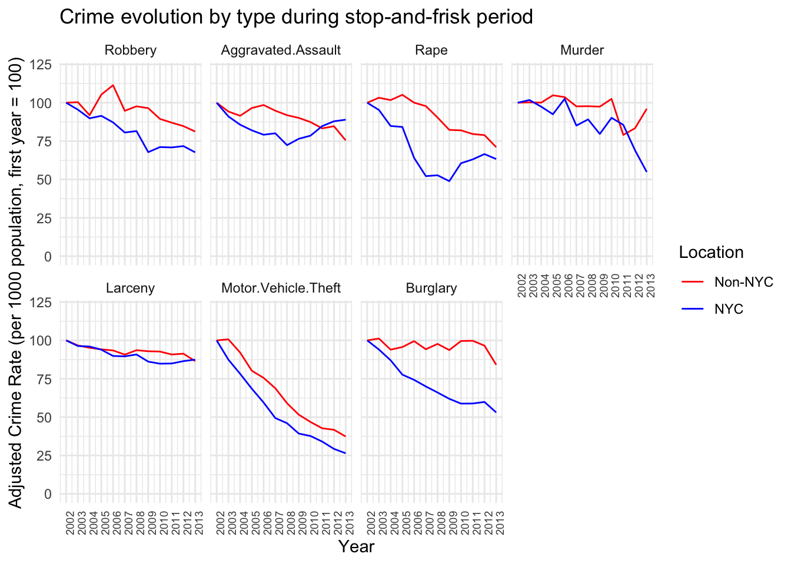

In this section, we delve into various aspects of our primary dataset. We initially focus on the overall crime trends since 1990. This analysis reveals a notable increase in the overall crime numbers post-2020, clearly deviating from the previous pattern. We hypothesize that this surge is linked to the socioeconomic ripple effects of the COVID-19 pandemic, and investigate it in some detail in the following section. Initially, we focus on the characteristics of this uptick at a county level, followed by an analysis of the type of crimes that saw a particular surge.
After a careful study of this anomaly, we shift our focus in the next section to a more comprehensive analysis of the crime types, their interrelations and connections to NY State counties. We compare different time periods and pay special attention to the disparities between NYC and non-NYC counties.
In the final section, we delve into a more detailed discussion of the crime types and their evolution over the past three decades. Particularly, in the stop-and-frisk subsection, we investigate the impact of “stop-and-frisk” – or more appropriately “Operation Impact” – implemented in the early 2000s in NYC. This involves comparing crime rates between NYC and non-NYC counties across different time periods to get a picture over the policy’s effects on the overall crime statistics.
Throughout our analysis we refer to our interactive plots, and how they provided us with a more comprehensive understanding of the data and improved our analysis of the associated questions.
3.1 Overall Crime Trends in NY State
We start by investigating the overall crime trends in NY State since 1990. We draw two plots, the first depicting the absolute crime numbers, while the second adjusts these numbers relative to population size. While oftentimes crime rates are reported as crime per 100,000 population, throughout this project, we report crimes per 1,000 population, which, in our view, provides a more meaningful insight, especially for counties with smaller populations. As a baseline for our numbers, we refer to the FBI report, which recorded a US national average of total crime (both violent and property crimes) at approximately 23 per 1,000.
We observe a pronounced decline in total crime figures in NY State, which is particularly notable between 1990 and 2000. This decline is evident also when adjusted for population; the crime rate per 1,000 residents in New York State shows a marked decrease. This drop is even more significant, since while the total number of crimes decreased, the population increased at the same time.
The decrease in crime tapers off towards 2010 and then gets another slight boost after 2012. Finally, there is a significant increase in the total crime numbers, as well as the population-adjusted figures after 2021. This surge stands out as a notable deviation from the generally decreasing trend observed over the past 30 years. Consequently, we strongly believe that it can be attributed to the socioeconomic consequences of the COVID-19 pandemic.
In the following we shall investigate this particular uptick in more details.
3.2 Impact of COVID-19 on Crime Trends in New York State
We have identified a substantial surge in crime incidents post-2021, a trend that we believe to be linked to the effects of the COVID-19 pandemic. This is certainly worth investigating more, and we shall mainly address the following key questions:
Which counties in NY State have experienced the biggest rise in crime rates following the COVID-19 pandemic, and is there a discernible geographical pattern or clustering associated with it?
What specific categories of crime have shown a particular surge during this period?
3.2.1 Analysis of COVID-19’s influence on Crime Rates Across NY State Counties
We first investigate the rise in crimes across the NY State counties. Since there are 62 counties in the state, we focus on the top 10 counties that have experienced the most significant percentage increase in crime since 2020. We refer to the interactive graph, which allows to get a more comprehensive view over the data. In particular, it is useful to contrast the COVID-19 impact among different counties subdivided by time-interval and crime categories.
Here, we calculate the change in crime rates per population from 2020 to 2022. We then select and analyze the counties that exhibit the highest increase in this metric. This approach will help us understand which areas have been most affected by the pandemic in terms of rising crime rates.
This graph shows that the NY City area (the “five Boroughs”), consisting of New York (Manhattan), Bronx, Kings (Brooklyn), Queens and Richmond (Staten Island) counties, showed the most pronounced increase in crime rates post-2020. This suggests that the socioeconomic challenges due to the pandemic were felt more strongly in the more densely populated areas of the state. This could be due to increases in poverty levels, changes in policing or other pandemic-related factors. Among the NYC counties, Richmond’s (Staten Island) rise is somewhat less steep, which could potentially be attributed to its more suburban characteristics.
Apart from the NYC area, counties such as Albany and Schenectady also show significant upticks, suggesting a more widespread effect of the pandemic beyond just rural areas. Similarly, Cortland, Cattaraugus, and Nassau counties show a less dramatic, yet still very evident, rise in crime.
We should be slightly careful with the crime rates here, since these numbers are calculated based on the estimated population figures for each county. The effects of the COVID-19 pandemic certainly affected these estimates. Particularly, the numbers for New York City could be skewed, as the population notably declined during the pandemic; see for instance this NY Times article, which estimates that even by 2022, the population has not rebounded to pre-pandemic levels. This would actually suggest that the crime rate per 1,000 residents may be higher than what we calculated in the above graph, implying an even more significant uptick when adjusted for the reduced population.
In other counties, this is less clear. For example, the migration of NYC workers may have actually increased the population in neighboring counties, and therefore these crime rates could in fact be an overestimate.
It is interesting to contrast the counties with the largest increase from 2020 to 2022 to the ones with the smallest increase (or even decrease).
Code
# top 5 and bottom 5:crime_top_bot_5 <- impact_of_covid |>filter((County %in% bottom_counties_5$County) | County %in% top_counties_5$County)crime_top_bot_5$County <-factor(crime_top_bot_5$County, levels = sorted_counties_2022)ggplot(crime_top_bot_5, aes(x = Year, y =1000*crime_pct, color = County)) +geom_line(size =0.9) +geom_point() +scale_color_manual(values = combined_palette) +labs(title ="Crime for Counties with Least/Most Increase After 2020",x ="Year",y ="Crime (per 1,000 residents)") +theme_minimal()
From this plot, we observe that the crime rates in smaller counties, such as Fulton, Schoharie, and Hamilton, were unaffected post-2020, and relatively judiciously continued the trend from pre-COVID. Hamilton is the smallest county in NY State by population (around 5,000 residents), while Schoharie and Fulton are slightly larger at about 30,000 and 50,000, respectively. Additionally, these counties are far from significant population concentrations and seem more rural. This could suggest that the pandemic’s impact on crime was less severe in these areas or that other factors helped to mitigate a rise in crime rates. As mentioned in the introduction, the power of this NY State dataset is that it represents very different demographics and living styles, allowing for better contrasts and potentially more exciting questions about causation.
Overall, the graph suggests that the pandemic’s impact on crime has been uneven across NY State, with more densely populated counties experiencing a more notable increase in crime rates compared to less populated ones. It is important to note that population changes, such as the exodus from urban centers like NYC during the pandemic, could further affect these rates. To support this assertion, we draw a scatter plot of population against crime rates.
Code
crime_inc <- impact_of_covid %>%filter(Year >=2020) %>%group_by(County) %>%summarize(increase = (last(crime_pct) -first(crime_pct)), .groups ='drop')covid_2020 <- impact_of_covid %>%filter(Year ==2020)# merge by countycombined_data <-left_join(covid_2020, crime_inc, by ="County")p <-ggplot(combined_data, aes(x = Population, #Population^(1/2), y =1000*increase, text = County)) +geom_point() +labs(title ="Change in crime rates from 2020 to 2022 vs population",x ="Population (in Millions)",y ="Crime rate (per 1,000) change") +theme_minimal()p_interactive <-ggplotly(p)p_interactive %>%layout(xaxis =list(tickmode ="auto",nticks =20),yaxis =list(tickmode ="auto",nticks =20) )
We indeed observe a relatively clear positive correlation of county population size against the change in crime rates between 2020 and 2022. As a matter of fact, a bit more massaging of the data shows that a very good interpolating function would be something like the square root of the population.
Finally, let us get a more comprehensive geographic look over the whole state by comparing the percentage increase/decrease of crimes per population since 2020. Recall, in the above graphs, we were interested in the absolute change of the crime rates between 2020 and 2022. Now, we look at the percentage change of crime rates adjusted for population from 2020 to 2022, i.e. as before, we calculate the difference between the crime per population size for 2022 and and 2020, but now we divide by the 2020 value to get a percentage.
First, it is clear that a majority of counties have seen an upswing in crime rates from 2020 to 2022, which supports the hypothesis that COVID-19’s socioeconomic effects have broadly impacted crime rates across the NY State region.
Schuyler County stands out with an approximately 90% surge in crime. Looking at the data more closely, we observe that Schuyler traditionally maintained relatively low crime rates, averaging 2-3 incidents per 1,000 population before 2020. This rate nearly doubled by 2022. The jump from 2020 to 2021 is especially significant, indicating a drastic move from its historical crime trends. This suggests that even areas with traditionally low crime levels were not immune to the pandemic’s impacts.
Interestingly, there has been a sharp decline in crime rates prior to 2017 in Schuyler County, and similarly drastic spikes to the one from 2021 to 2022 have occurred before. We believe that this volatility is partly due to Schuyler’s relatively small population; it is the second smallest county (after Hamilton) in NY State by population. Consequently, even small numerical increases in crime can translate into relatively large percentage changes. Specifically, we have seen especially significant upticks in larceny and burglary incidents in Schuyler over the past two years.
Similar to Schuyler county, Cattaraugus county is an outlier; namely, it is a relatively rural area having experienced an unexpectedly large percentage increase in crime rates. Its small population size means that, similar to Schuyler, minor changes in crime figures can result in disproportionately high percentage changes. We remark that specifically the Larceny numbers in Cattaraugus increased by a lot, which is again in line with the analysis of Schuyler. It is interesting to compare and contrast the crime trends across the years for these two counties using the interactive plot in the next section. We see very similar crime patterns between them throughout the past 30 years.
Let us now delve a little deeper into the regional aspects of the post-2020 crime percentage change. First, we notice that, unsurprisingly, there is a cluster with a steep crime increase in and around NYC (Kings, Queens, Bronx, New York and Richmond). This upswing also extends to some parts of Long Island, notably Nassau county, and to a lesser extent, Suffolk county. The pattern towards the east and Long Island is somewhat matched towards the north, where especially Putnam county saw a steep increase in crime.
More interestingly, there is another cluster showing a more-than-average rise in total crime around Saratoga, especially in Albany and Warren. Remarkably, neighboring to the east, there is a notable cluster where crime has decreased, including Fulton, Hamilton, Montgomery, and Schoharie counties. It is interesting to compare the crime trends of these counties using the interactive plot; we observe that they all follow quite similar patterns up to the past two years, which suggests that differing COVID-19 and policing policies could have an impact on the diverging numbers. The underlying reasons for this regional contrast in crime trends are not immediately clear to us, and would require a closer look at local factors to understand the dynamics at play.
3.2.2 Examining the Effect of COVID-19 on Crime Categories
We now turn our attention to the crime categories most affected by the effects of the COVID-19 pandemic. Given the clear contrast in crime trends between NYC and non-NYC counties discussed earlier, the following analysis will distinguish between these two groups. We start by examining a stacked area plot illustrating the distribution of the crime types over the past 20 years. We choose this relatively long time-period in order to understand the changes in crime categories prior to the COVID-19 pandemic.
Code
# NYC Data:NYC <- crime_ny_with_fips_and_pop[crime_ny_with_fips_and_pop$Region =='New York City', ]columns_to_plot <-c("Murder", "Rape", "Robbery", "Aggravated.Assault", "Burglary", "Larceny", "Motor.Vehicle.Theft")NYC_long <- tidyr::gather(NYC, key ="Variable", value ="Value", columns_to_plot)NYC_long_summarized <- NYC_long %>%group_by(Year, Variable) %>%summarise(Sum_Value =sum(Value, na.rm =TRUE),Population =sum(Population)) %>%ungroup()# non-NYC Data:non_NYC <- crime_ny_with_fips_and_pop[crime_ny_with_fips_and_pop$Region !='New York City', ]columns_to_plot <-c("Murder", "Rape", "Robbery", "Aggravated.Assault", "Burglary", "Larceny", "Motor.Vehicle.Theft")non_NYC_long <- tidyr::gather(non_NYC, key ="Variable", value ="Value", columns_to_plot)non_NYC_long_summarized <- non_NYC_long %>%group_by(Year, Variable) %>%summarise(Sum_Value =sum(Value, na.rm =TRUE),Population =sum(Population)) %>%ungroup()# combine the twocombined_NYC <-rbind(mutate(NYC_long_summarized, Location ="NYC"),mutate(non_NYC_long_summarized, Location ="Non-NYC"))# focus on past 5 yearscombined_NYC_past5 <- combined_NYC[combined_NYC$Year >=2000,]combined_NYC_past5$pct <- combined_NYC_past5$Sum_Value/combined_NYC_past5$Population# make sure we sort:cumulative_sums <- combined_NYC_past5 %>%group_by(Year, Variable) %>%summarize(Total =sum(1000* pct, na.rm =TRUE)) %>%ungroup() %>%arrange(Year, -Total)# change factor levels according to above sorted criteriumcombined_NYC_past5$Variable <-factor(combined_NYC_past5$Variable, levels =unique(cumulative_sums$Variable))# plotggplot(combined_NYC_past5, aes(x = Year, y =1000* pct, fill = Variable)) +# geom_bar(stat = "identity", # position = "stack") +geom_area(position ='stack',alpha =0.7) +labs(title ="Crime Types by Region since 2000",x ="Year",y ="Crime (per 1,000 residents)") +theme_minimal() +facet_wrap(~Location, ncol =1) +scale_fill_brewer(palette ="Set1")
Analyzing the graph, we see distinct trends in crime categories for New York City and the rest of the state. First, in NYC, there has been a considerable reduction in motor vehicle thefts and burglaries. The former is certainly partially related to advancement in security systems for cars. What is also striking is that aggravated assault incidents remained relatively constant throughout the two decades both in NYC and the rest of the state. Actually, NY City has experienced a noticeable rise in such incidents. Finally, in non-NYC counties, Larceny incidents steadily declined up until 2020, while for NYC counties, it remained relatively constant up until 2020.
The analysis of the evolution of each crime type was supported by the use of the two interactive plots, which allowed us to subdivide and explore the data in much more detail.
We will now delve deeper into the specific crime types that have witnessed the largest increases in the past couple of years (absolutely and in percentage).
We first notice that surprisingly motor vehicle thefts have increased the most percentage-wise. While their actual numbers remain comparatively small, they observed a jump of almost 60% in NYC. Larceny, robbery and aggravated assaults are somewhat expected to have increased significantly due to the socioeconomic effects and overall increases in poverty due to the COVID-19 pandemic. The changes – as noted in the previous section – are especially significant in NYC. Furthermore, the increase of about 20% in the amount of rape incidents in NYC is quite surprising. We shall discuss the evolution of the rape incidents a bit more further below, as it shows some unexpected patterns. Finally, we notice that the number of murders in all of NY State has decreased.
It is important to keep in mind that the baselines from which these percentages were calculated are important; a small increase from a low starting point can lead to a high percentage change.
This concludes our discussion of the interesting uptick observed in the first section in crime rates after 2020. We mainly refrained from making conclusions on causation of various features. The effects of the pandemic on the population, ranging from economic to mental and social repercussions is inherently complicated. From our treatment, it is clear that a “shift” happened in 2020 which significantly affected the crime rates. It especially seemed to have affected urban areas (especially NYC) and apart from the murder rates (and burglaries outsides of NYC) all crime categories seemed to have been affected. It will be interesting to monitor how the trends continue in 2023 and the future, but there are some reports suggesting that crime is declining again.
3.3 Exploring Relationships Between Crime Categories and Counties
We now turn towards examining the relationships among different types of crimes and discerning if there are any geographic or socioeconomic patterns among counties. We use the tool of biplots, which involves reducing the data from the seven crime categories — murder, rape, robbery, aggravated assault, burglary, larceny, and motor vehicle theft — down to two dimensions using Principal Component Analysis. By doing so, we can map the counties onto a two-dimensional plane, where the proximity and positioning may reveal interesting underlying associations between the crime types and the counties’ characteristics.
We start by drawing a biplot for the full three decades of data that our dataset contains.
This graph reveals that the crime types of aggravated assault, murder, robbery and motor vehicle theft seem to be correlated, i.e. if one occurs especially comparatively often in a county so does the other. Similarly, burglary and larceny seem to be strongly related. Finally, rape is somewhat on its own and interestingly quite orthogonal to aggravated assaults and murders. Of course, we only capture around 80% of the variation in this plot, so this only paints a broad picture.
With respect to regions, it looks like four of the five NYC Boroughs (Manhattan, Bronx, Brooklyn and Queens) show similar crime patterns, which are especially distinct from the remaining counties. They seem to be aligned with high numbers in the aggravated assaults, murders, robberies and motor vehicle thefts. Notice that due to the large number of these crimes in the 90s in and around NYC, most of the other counties are clustered towards their negative directions (due to standardization), and therefore, the more interesting direction is actually along the burglary, larceny and rape axes.
Interestingly, the surrounding areas of NYC including Richmond, Nassau, Westchester and Suffolk also seem to form a regional cluster characterized by comparatively low numbers in burglary, larceny and rapes. Recall that we have seen these counties behave similar to each other in the COVID-19 analysis.
Let us now redo the analysis for the more recent years, to see whether some of the patterns change.
Code
crime_ny_filtered_county_tot_since_2010 <- crime_ny_filtered_county_tot %>%filter(Year >=2010) %>%group_by(County) %>%summarise(across(everything(), sum))# we remove some labels by hand to avoid overplottingrepl_some_county_names <-c("Cortland", "Cayuga","Genesee","Clinton","Steuben", "Tompkins","Oswego","Herkimer", "St Lawrence", "Lewis","Tioga", "Ulster", "Wyoming", "Orleans", "Schoharie", "Yates", "Madison", "Essex", "Seneca", "Ontario", "Washington", "Otsego", "Wayne", "Chamung", "Oneida", "Cattaraugus", "Allegany", "Greene")crime_ny_filtered_county_tot_since_2010 <- crime_ny_filtered_county_tot_since_2010 %>%mutate(County =ifelse(County %in% repl_some_county_names, ' ', County))draw_biplot(crime_ny_filtered_county_tot_since_2010[,c(1,3:9)], project = F,point_labels = T, point_size =1) +labs(title ='Biplot of Crime Rate (per 1,000 Residents) from 2010 to 2022') +theme_minimal()
The crime-type “clusters” remain relatively constant, though they are slightly more “spread out.” Furthermore, the NYC counties (except Richmond) are strongly aligned along the robbery-cluster axis. Also the Richmond, Nassau, Westchester and Suffolk cluster remains relatively intact. The very eastern counties towards the Canadian border (Niagara, Erie, Monroe) seem to have particularly high numbers in vehicle thefts. It is quite surprising that the broad strokes of this picture remains relatively constant across time - a more in-depth analysis showed that that is the case for various other time periods - which means that one could attempt to interpret clusters and groupings using a demographic analysis by county.
It is interesting to contrast the viewpoint offered by these graphs with the interactive barchart, which allows us to compare the crime-incident numbers by categories across years and counties and provides a somewhat orthogonal viewpoint.
Let us finally focus on the NYC Counties and their biplot for the most recent couple of years.
Code
crime_ny_filtered_county_tot_since_2020_NY <- crime_ny_filtered_county_tot %>%filter(Year >=2020& County %in%c('Richmond','New York','Kings', 'Queens','Bronx')) %>%group_by(County) %>%summarise(across(everything(), sum))draw_biplot(crime_ny_filtered_county_tot_since_2020_NY[,c(1,3:9)], project = T,point_labels = T, point_size =1,'Robbery') +labs(title ='Biplot of Crime Rate (per 1,000 Residents) from 2020 to 2022 in NYC') +theme_minimal()
It seems like among the five Boroughs, robbery is the most discerning crime type. We furthermore notice that rape is aligned with aggravated assault and murder, which makes sense to us. Manhattan seems to be comparatively strongly associated with “property crimes” (larceny and burglary), while Bronx county is strongly associated with the “violent crimes” (rape, aggravated assault and murder).
We conclude this section by remarking that this type of plot paints a really interesting picture. A more in-depth analysis of the socioeconomic and demographics of the clustered counties together with policing policies would be very interesting and potentially insightful.
3.4 Analysis of Crime Trends
We briefly touched upon the general shift in crime types within New York City and across the state, particularly in relation to the COVID-19 pandemic, as detailed here. This provided a broad overview of trends in the past two decades. We now investigate further the evolution of individual crime categories over time. We also refer to the interactive barchart to provide a more fine-grained viewpoint on the crime types by county by year.
In the first row of the graph, we show the crime type categorized as “violent crimes”, while in the second row, we show the ones categorized as “property crimes”. We have learned that there is quite a difference between NYC and non-NYC counties, and therefore look at the data separated among those two categories.
We shall discuss the apparent jump in rape incidents in the following. Other than that, and apart from the COVID-bump after 2020, we observe that the incidents for each crime type has steadily decreased over the past 30 years. Especially motor vehicle thefts have gone through a steep decline in the 90s. Again, we believe that this is partially due to the advancement of security systems of cars.
While most categories seem to decrease through the 2000s, aggravated assault numbers remains relatively constant and eventually even increased in the late 2010s and early 2020s in NYC. We did not find an underlying reason for this increase; it could be due to various factors such as reporting inconsistencies, socioeconomic factors, or legislative policies. We will delve a bit deeper into that period when we try to analyse the efficacy of “stop-and-frisk”.
3.4.1 The curious case of Rape Incidents
The main thing that jumps out in the above graph is the (relatively) massive jump in rape incident numbers from 2014 to 2015 in all of NY State. The reason for this jump is actually due to an “expanded definition” of the crime. In short, the FBI implemented a change in definition to “more accurately reflect the scope and volume of sexual assaults nationwide.” Therefore, we should refrain from inferring and comparing rape incident numbers across 2014.
3.4.2 Examining the Influence of “Operation Impact” and Stop-and-Frisk Policies
We now address another interesting question: Does our dataset offer any insights into the impact of “stop-and-frisk”, or more specifically, the “Operation Impact” initiative during Mayor Bloomberg’s administration on crime rates in NYC? Many other studies have investigated stop-and-frisk effects using more directly related data, but our focus here is to analyze any potential correlation from the perspective of our dataset. We aim to investigate the hypothesis that Operation Impact or stop-and-frisk should decrease the overall crimes committed. In particular, our goal is to discern whether crime statistics in NYC, where stop-and-frisk was heavily enforced, show a more pronounced decline compared to other NY State counties.
The “stop-and-frisk” policy, which was part of Operation Impact, allows police officers to stop, question, and search individuals they suspect of criminal activity. The practice is often associated with Bloomberg’s time as Mayor of NYC (2002-2013). It was especially prevalent around 2011 where over 685,000 stops were recorded. The practice was eventually declared unconstitutional and racially biased in the court case of Floyd v. City of New York in 2013. Following Mayor Bill de Blasio’s election in 2014, the frequency of stop-and-frisk plummeted.
In our analysis, we will compare crime rates in NYC during the stop-and-frisk era against those in other NY counties. We specifically examine the periods before 2002, between 2002-2013, and after 2014, and hypothesize that any significant policy effects would be most explicit from around 2006 to 2012. It is important to note, however, that our dataset may not cleanly distinguish the effects of stop-and-frisk from other strategies, such as heightened police presence in high-crime areas (Operation Impact), and we might observe impacts more attributable to the latter than to stop-and-frisk itself, as suggested by this report.
We start by employing a time-series technique in which we adjust and normalize the time series data such that the starting value is fixed to 100. This should allow us to more carefully analyse the changes in crime data between NYC and non-NYC counties. We are mostly interested in the middle (“stop-and-frisk”) period and how it compares to the pre- and the post stop-and-frisk eras as well as how the NYC data compares to the non-NYC data.
In the graph, we naively observe that the NYC crime numbers decrease more rapidly during the “stop-and-frisk” period compared to the non-NYC counties. However, we also note that they did so in the pre-stop-and-frisk era as well. What is interesting is that once de Blasio took office, the crime rate in non-NYC counties decreases faster than in NYC. We further observe that this trend is already changing around 2009, where the decrease in NYC somewhat halts. This plateau might suggest that the initial steep decrease in crime rates was not sustained at the same rate during the height of stop-and-frisk. Meanwhile, non-NYC counties continue to experience a gradual decrease, although they show slight fluctuations in the trend.
These trends suggest that while there was a general decline in crime during the stop-and-frisk years, it is not possible to attribute this entirely to the policy without further, more detailed analysis. The fact that crime rates also decreased in non-NYC areas, where stop-and-frisk was not implemented, indicates that other factors may have influenced the downward trend.
Additionally, the post stop-and-frisk period uptick raises questions about the long-term efficacy of the policy. If stop-and-frisk had been an actual efficient crime deterrent, one would naively expect crime rates to remain low or at least not to increase immediately once the policy was no longer in use.
We shall now look at the evolution of the crime types during the stop-and-frisk period, to see whether we can spot any interesting patterns.
Code
# during stop-and-friskcombined_NYC_bloomb <- combined_NYC %>%filter(Year >=2002& Year <=2013) %>%group_by(Variable, Location)combined_NYC_bloomb2 <- combined_NYC_bloomb %>%group_by(Year, Location, Variable) %>%summarise(Sum_Value =sum(Sum_Value, na.rm =TRUE),Population =sum(Population)) %>%ungroup()combined_NYC_bloomb2 <- combined_NYC_bloomb2 %>%group_by(Location, Variable) %>%mutate(adjusted_value =100*Sum_Value/Population/first(Sum_Value/Population))reasonable_order <-c("Robbery", "Aggravated.Assault", "Rape", "Murder", "Larceny", "Motor.Vehicle.Theft", "Burglary")combined_NYC_bloomb2$Variable <-factor(combined_NYC_bloomb2$Variable, levels = reasonable_order)ggplot(combined_NYC_bloomb2, aes(x = Year, y = adjusted_value, color = Location, group = Location)) +geom_line() +labs(title ="Crime evolution by type during stop-and-frisk period",x ="Year",y ="Adjusted Crime Rate (per 1000 population, first year = 100)") +scale_color_manual(values =c("NYC"="blue", "Non-NYC"="red")) +theme_minimal() +facet_wrap(~Variable, nrow =2) +scale_x_continuous(breaks =function(x) seq(floor(min(x)), ceiling(max(x)), by =1)) +theme(axis.text.x =element_text(angle =90, hjust =1, size =7)) +scale_y_continuous(limits =c(0, 120))

Looking at the robbery, aggravated assault, rape, and murder trends, there is a clear decline in both NYC and non-NYC areas over the years. However, the rates of decline are not larger in NYC compared to non-NYC areas, which one might naively expect if stop-and-frisk was highly effective. For instance, the decline in robbery rates is quite similar in both regions, and aggravated assault rates actually show a slight increase in later years for NYC.
We observe that the decline in the number of burglaries in NYC is the steepest compared with the non-NYC counterpart. Burglaries is a type of crime that we do not believe should be related to any potential “stop-and-frisk” policies. On the other hand, changes in aggravated assault numbers remained comparatively equal between NYC and non-NYC counties, which is something that additional police presence could certainly influence.
Finally, we remark that in the paper by members of the University of Pennsylvania, they found that while extra police deployment to high crime areas in NYC under Operation Impact contributed to a major decline in crime, the additional use of stop-and-frisk made almost no difference. So the decreasing crime effects should probably not be attributed to stop-and-frisk but rather to the overall efforts of the NYPD in high crime areas.